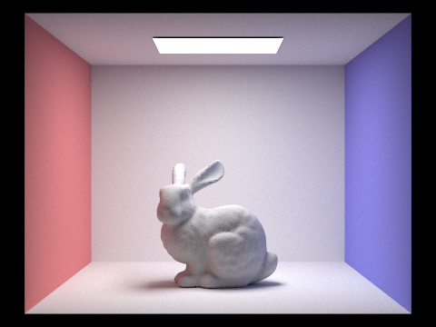

In this project, I implemented various intersection, lighting, and ray algorithms to generate parts of a physically-based renderer. First I implemented intersection to render primitive objects with normal-shading. This was then accelerated using a BVH, a structure commonly used to optimize ray-AABB intersections. Then I implemented direct lighting and global illumination, which used Monte Carlo estimators to evaluate integrals. Finally, I added adaptive sampling in order to cut down on the number of samples taken and optimize the renderer.
An image is rendered by sampling each pixel on the screen individually. To sample a pixel, a ray is cast from where it would be in the world projection of the scene and the color at where it lands is taken and returned.
To generate a ray on-demand from screen coordinates, I first convert the coordinates from screen space to camera space, and then to worldspace. I set the min and max t values to our near and far clipping planes. As part of the rendering pipeline for ray generation, we also implement raytrace_pixel; for this step, we first trace samples of camera rays through the scenes and find the average color using a Monte Carlo estimator. Our estimator generates rays at a screen space offset by a uniformly sampled delta value from a unit grid; this estimates the radiance integral at a point, which is in turn used to update the pixel at that point.
Triangle intersection is achieved through the use of the Möller-Trumbore intersection algorithm to find the alpha, beta, and gamma in barycentric coordinates, a known algorithm presented in lecture. The MT algorithms require some intermediate values, which we can calculate through cross products, dot products, and subtraction. Sphere intersections are calculated by solving the quadratic formula that results from setting a ray equation equal to a circle.
To construct the BVH, first expand the current node's bounding box to include every primitive it has as a child. If this node being a leaf node would cause it to overflow the max leaf size, it is given a left and right child. To calculate the split point for these children, I used the following algorithm:
Define small-bucket as the smaller of the two buckets
Define an ideal partition to be as even in size as possible
Partition by x-axis centroid (which gives scene locality) (O(N log N) swaps)
If small-bucket is >50% off of the ideal size
partition by either y or z-axis centroid randomly (O(N log N) swaps)
If small-bucket is degenerate
set split point to be median of entries (constant, but no locality)
The left and right nodes are then calculated recursively.
The following images take an excessively long time to render without an acceleration structure:
BVH acceleration is much better than having no acceleration structure at all. Without a BVH, Lucy takes 206 seconds to render. With one, the render is done in about half a second. Similarly, Beast speeds up from 222 seconds to half a second. This is expected because the naive no acceleration structure approach is very inefficient -- it loops through every primitive in the scene for every ray.
For the estimate_direct_lighting_hemisphere function, I use a Monte Carlo estimator to approximate light arriving at an intersection point. To do this, I shoot rays sampled from a cosine weighted hemisphere out of the intersection point. Rays that hit light sources contribute towards the light at an intersection point, which is then averaged by the number of samples taken and returned.
For our second direct lighting function estimate_direct_lighting_importance, the uniform sampling method will converge eventually, but it does so slower and also cannot handle point-lights (for which the chance of hitting from an intersection point is infinitely small). Importance sampling directly queries the light sources themselves, avoiding the issue of point-lights while also converging faster. It was implemented by computing a Monte Carlo estimator on each light. This estimator shoots rays sampled from a cosine weighted hemisphere out of its light. Rays which hit the intersection point cast light onto it, and contribute to the estimator. The results of these Monte Carlo estimators are then weighted, summed, and returned.
Uniform hemisphere sampling appears to have noise because it converges relatively slowly. This phenomenon can be seen below.
As the number of light rays cast increases, the accuracy of the image also increases, despite the sample-per-pixel level of one. At 64 light rays, the image is nearly smooth even with the low sample rate.
Overall, importance sampling fares much better than hemisphere sampling because of its better convergence rate and ability to support point-lights. However, importance sampling may suffer in scenes with excessive amounts of lights because it loops across every light source.
Global illumination is implemented using recursive ray-tracing. First, we calculate the zero-bounce radiance of a point; this accounts for light sources. Then, bounces >=1 are calculated via the recursive at_least_one_bounce_radiance method. This method calculates the one-bounce radiance at the intersection point, then finds the intersection point of the next bounce and adds the at_least_one_bounce_radiance from that bounce (weighted by pdf, cpdf, and cos(theta)) to L_out. In order to avoid recursing infinitely, we implement a maximum bounce depth beyond which all bounces are killed, as well as random deaths using Russian Roulette with a pkill value of .3.
Global illumination gives the render much more visual richness. This is because much of the color given to an object is from light indirectly bounced onto it, rather than directly cast.
Much of the luminance given to an object comes from the direct lighting cast on it. However, indirect lighting plays a large role in making an image look pleasing. It provides "warmth" to an image through the light rays being bounced around, giving it a less ominous feel. The below images demonsrate this effect. The image with only direct lighting has high contrast, making it feel stark. The image with indirect lighting bounces the red and blue around, giving it less contrast.
Increasing the number of bounces on a render grants drastically better visuals at lower values of m, but eventually there will be diminishing returns. This is because some light is absorbed by objects on every bounce, eventually the effect of bounces will be almost imperceptible.
At zero bounces, only light sources are visible (light never bounces to the camera).
At one, the bunny is visible, but hardly lit.
At two, the bunny is reasonably lit, while the corners and shadows are still sharp.
At three, shadows are rounded out reasonably. The image is pleasing as a whole.
At 100, the point of diminishing returns has long been passed. A close examination does reveal slightly warmer lighting across the entire image.
|  |
Increasing the sample-per-pixel rate helps reduce noise while increasing render times. The below images demonstrate this fact -- with very low sample rates, the image is difficult to make out. As it gets higher, the noise is reduced until a clear picture is produced. At 1024 samples, the noise no longer distracts from the image.
To perform adaptive sampling, we keep a running sum of the illuminance and illuminance squared returned by est_radiance_global_illumination in raytrace_pixel. Every time the sample batch size is reached before the max allowable samples, we measure the convergence and test if it has reached a 95% confidence level. If it has, we can break out of the sampling loop immediately.
More complex areas of images take longer to converge to a value, so they will require more samples. Areas covered by shadows or having multiple light sources are some examples This can be seen below, where the complex luminance around the spheres' shadows requires much more samples ot converge than the top, which is directly exposed to a light source.
Website URL: https://cal-cs184-student.github.io/sp22-project-webpages-GalliumCat/